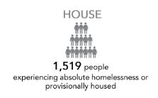
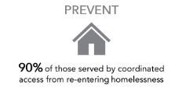

|
 | |
|
 | |

Here we will give information about the targets
For example:
EHW set up the Create target in hope of creating 1340 housing units.
Break down of those unit are as follow:
Private market rental 450 Socail; 470 Community:400 etc
Definitions: Private Market Rental: Rental housing that is owned by the private sector and rented at market rate. Social Housing: Social housing provides independent, self-contained units for low-income residents whose total household income does not exceed the posted Social Housing Program Limit (e.g., Manitoba Housing program). Social housing is often rent geared-to-income (RGI) housing, where a subsidy is provided to cover the difference between a tenant's RGI rent and the unit's market rent. Social housing includes buildings owned and operated by the Province or a non-profit organization; as well as individual, subsidized units owned and operated by private or non-profit landlords. Non-Profit & Community Housing: Rental and cooperative housing that is owned by the community sector and rented at market and/or below-market rates. This may include affordable housing provided due to a previous agreement with government; or low-income housing (affordable, below market, rent-geared-to-income) provided without a subsidy from a government body. Transitional Housing: A supportive and temporary or intermediate type of accommodation that is intended to bridge a gap to permanent or independent housing by offering structure, supervision, support, life skills, education, etc. in a setting that is more long term, service intensive and private than Emergency Shelters. Often, stays are 3 months to 3 years in length. Permanent Supportive Housing: Rental housing with individualized services for people who have high needs related to physical or mental health, substance use or recovery, and/or developmental disabilities; one option for housing chronically homeless individuals with higher needs.
Data Source: Building Services
Tammy or stephane to write discription here